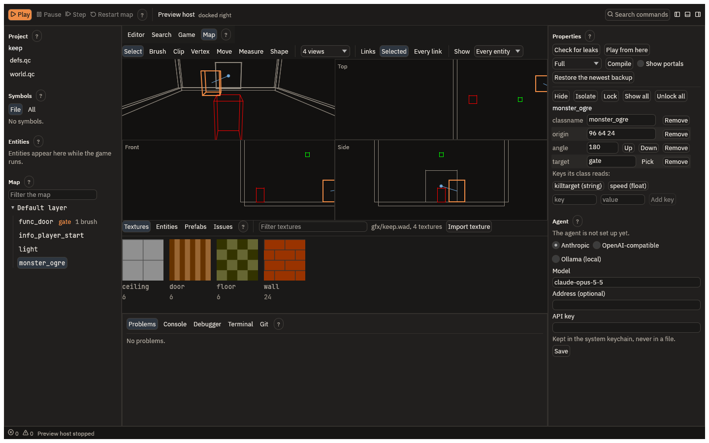
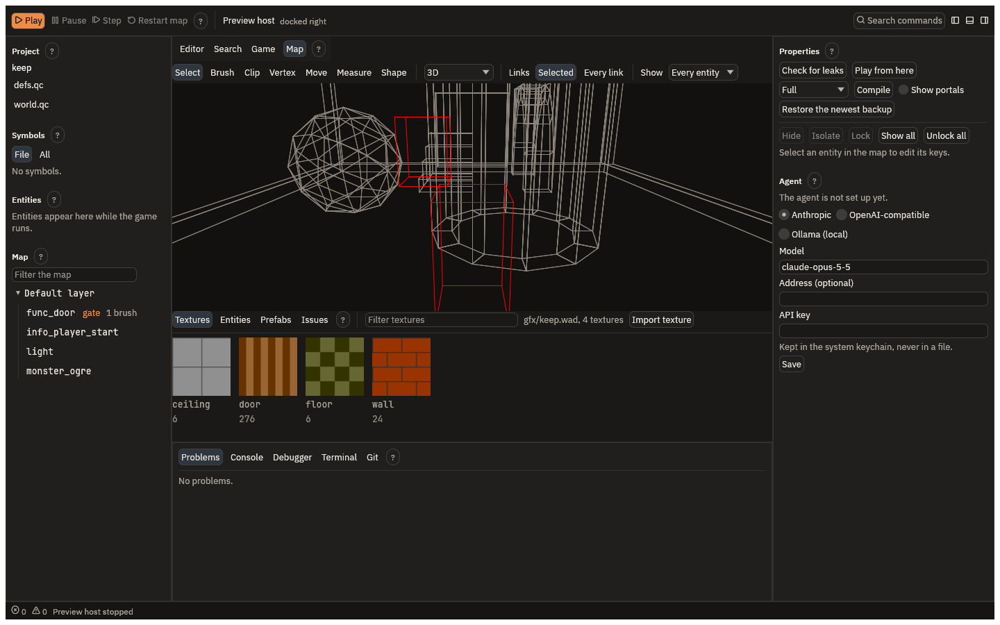
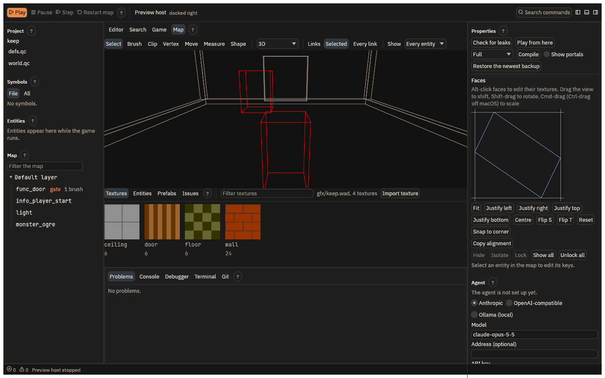
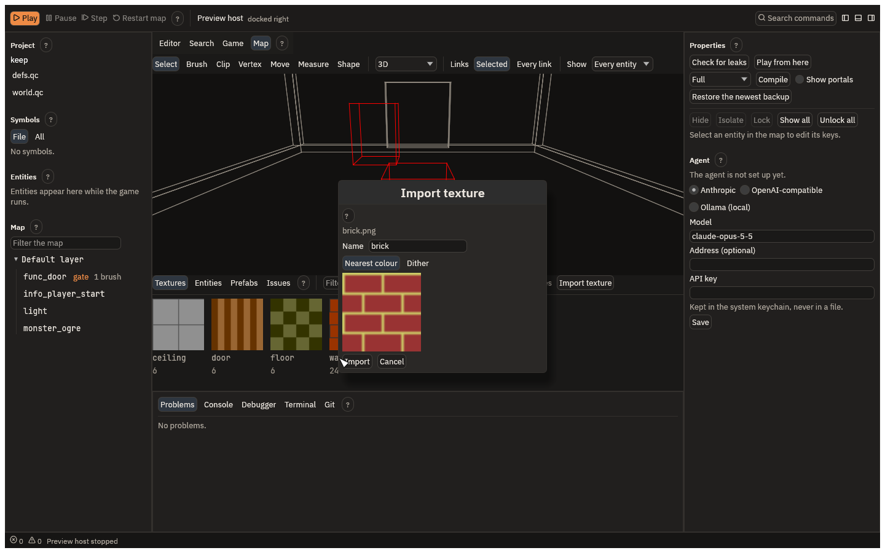
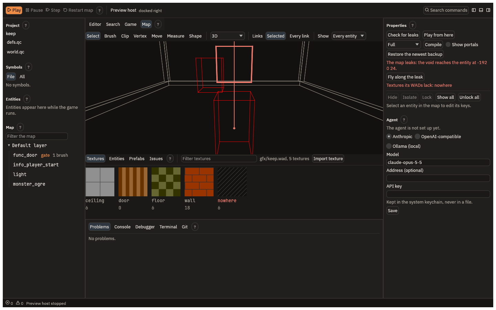

The map editor
This page takes you through building a map in QuakeC Studio: opening one, editing its entities and brushes, giving it textures, compiling it, finding a leak, and playing it from where you stand. Everything here works offline.
1. Set up once
You need a project open (see Getting started) and your own copy of Quake. The map editor reads the game where it is installed and never copies it.
- The game. Press Play once. If the IDE cannot find your game, it shows Choose your
Quake folder, says what the folder it looked at holds and lacks, and Choose folder picks
the folder that holds
id1. The IDE remembers it. Your Quake game data says which versions work. - The textures. A map names its WAD files in the world's
wadkey, as id's tools and ericw-tools read it. The texture browser lists the textures of every WAD the map names, found in the project, beside the map, or in the game folder. A texture no WAD holds is drawn with a stand-in and its name shown in red, with No WAD the map names holds this texture.
2. Open a map
In the Project panel, click a .map file. It opens in the Map tab in the centre: the 3D
view, the toolbar above it, and the Textures, Entities, Prefabs and Issues tabs below it. The
Map panel on the left lists the map's layers and entities; the Properties panel on the
right edits the selection. A .bsp with no .map opens too, to look at, but cannot be
compiled.

Moving around. Drag the 3D view to turn and scroll to move. With the view focused, W, A, S and D fly forward, left, back and right, and Q and X fly up and down, as in TrenchBroom. The layout picker beside Select shows the 3D view alone, 3D + top, or 4 views: 3D, top, front and side.

3. Edit entities
Click an entity in the view, or its row in the Map panel, to select it. Properties shows its keys:
- Edit a value in place, and Remove takes a key away.
- Keys its class reads lists the keys its QuakeC class uses, with their types, read from your mod's code. Click one to add it.
- Add key adds any other key and value.
- For a
targetorkilltarget, Pick lets you click the entity it should fire, or Alt-drag from the selection onto it. Links in the toolbar draws the lines between entities that target each other, for the selection or for every entity.
To place a new entity, open the Entities tab below the view and drag a class into the map. The classes are your mod's, read from its QuakeC.
With an entity selected in the 3D view, the arrow keys and Page Up and Page Down move it by the grid, Alt with Left or Right turns it, Delete deletes it, and Cmd+D duplicates it. Cmd+S saves the map.
Hide, Isolate, Lock, Show all and Unlock all in Properties act on the selection, and Show in the toolbar filters the entities by skill, coop and deathmatch.
4. Build with brushes
The toolbar's tools make and change brushes:
- Brush: drag on the ground to draw a box.
- Shape: drag a box to fill it with a shape: a cylinder, cone, arch, UV sphere, icosphere, rock, scalable curve, stairs or spiral stairs, solid or hollow.
- Clip: select a brush, then drag the cut line; keep the part on either side.
- Vertex: move a brush's corners, split its faces and edges, extrude or chamfer.
- Move: select brushes, then drag to move them.
- Measure: drag from one point to another to read the distance.

With brushes selected, Brushes in Properties offers Subtract, Merge, Intersect, Delete brush, scaling and shearing.
Textures. Click a texture in the Textures tab to choose it; with brushes selected, Apply and the texture's name in Properties paints them with it. Alt-click faces in the view to select them alone; then drag the view to shift their texture, Shift-drag to rotate it and Cmd-drag to scale it. Fit, the justify buttons, Flip S and Flip T, Reset, Copy alignment and Paste alignment act on the selected faces. Texture lock keeps textures in place as brushes move.

To bring in a texture of your own, drop a PNG on the window while the Textures tab shows, or
press Import texture. The IDE maps its colours to Quake's palette, with Nearest colour or
Dither, writes it into the project's own WAD in textures/, and names that WAD in the map's
world.

Prefabs. Select brushes and entities and Save as prefab to keep them in the project's
prefabs folder; drag a prefab from the Prefabs tab into the view to copy it in.
5. Compile
The compile controls are at the top of Properties:
- Compile builds the map with the profile chosen beside it. Full runs the BSP, full vis
and full light; Fast runs fast vis and fast light. A project can add its own profiles in
compile-profiles.toml. - Check for leaks compiles the map in memory and says whether it leaks.
- Show portals draws where the map's leaves meet, from the last compile.
The compilers are QuakeC Studio's own, built into the app and checked against id's tools and
ericw-tools. Coloured lights, with a _color key, write a .lit beside the BSP.
6. Find a leak
A map leaks when an entity can reach the void through a gap in the world's brushes. Check for leaks says which entity the void reaches, draws the trail from it to the outside in the view, and Fly along the leak takes the camera along the trail to the gap. It also lists the textures the map's WADs lack.

When the map is sealed, it says The map is sealed: no entity is in reach of the void.
The Issues tab's Check map lists the map's other problems, checked against your mod's
QuakeC: a key no field of its class reads, such as a misspelled speed, and a missing texture.

7. Play from here
Play from here compiles the map fast, with no vis and fast light, starts the game on it, and puts you where the 3D view's camera is, facing its way. If the camera is in a wall or in the air, the player is moved up or down to the nearest place they fit. Walk around, then come back to the editor, change something and press it again.
8. If something goes wrong
The editor keeps a backup of the open map every minute while it has unsaved edits, and one each
time you save, in an autosave folder beside the map; the last 20 are kept. Restore the
newest backup puts the latest one in the editor as an edit, which Cmd+Z takes back.
If the file changes on disk while you have edits, the editor asks: Reload from disk, Keep mine, or Compare to see the difference.
Next
- The play loop: change your mod's QuakeC while the map runs.
- Debugging: stop the running game at a line of your code.
- Commands: every
map.*command, which the agent, MCP and the CLI share.